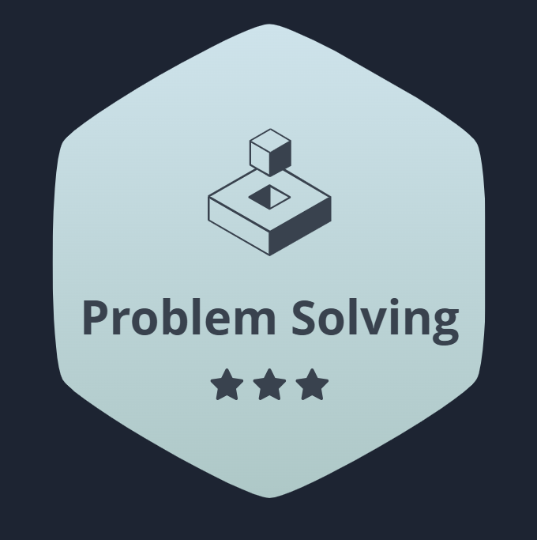
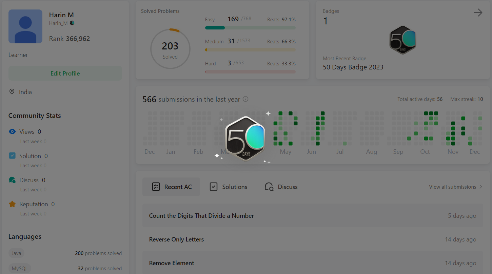

Engaging in problem solving is akin to embarking on a perpetual quest for solutions amidst a
labyrinth of challenges. It's a journey that demands not just technical expertise but also creative ingenuity
and relentless determination. With each problem encountered, there arises an opportunity to dissect, analyze, and
craft innovative strategies to overcome obstacles. Whether it's unraveling complex algorithms, untangling knotty
logical puzzles, or devising elegant solutions to real-world dilemmas, problem solving is a multifaceted endeavor that transcends mere coding proficiency.
It nurtures resilience, fosters adaptability, and cultivates a mindset primed for continual growth and learning.

Welcome to the ultimate coding marathon: 50 Days of Programming on LeetCode! Brace yourself for an exhilarating journey through
the realm of algorithms, data structures, and problem-solving prowess.
Over the course of 50 days, you'll immerse yourself in a world where challenges abound and solutions sparkle with ingenuity.
Each day presents a new opportunity to sharpen your skills, tackle intricate problems, and unravel the mysteries of efficient
coding.
single-handedly developed a Python project from inception to completion. Tasked with creating a dynamic
inventory management system for a local business, I utilized my Python proficiency to design, code, and
implement the entire solution. I created a user-friendly interface with functionalities such as product tracking,
order management, and real-time
inventory updates. This solo endeavor not only showcased my technical prowess in Python but also allowed me
to refine my problem-solving skills and gain a comprehensive understanding of full-stack development.